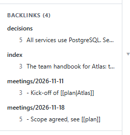
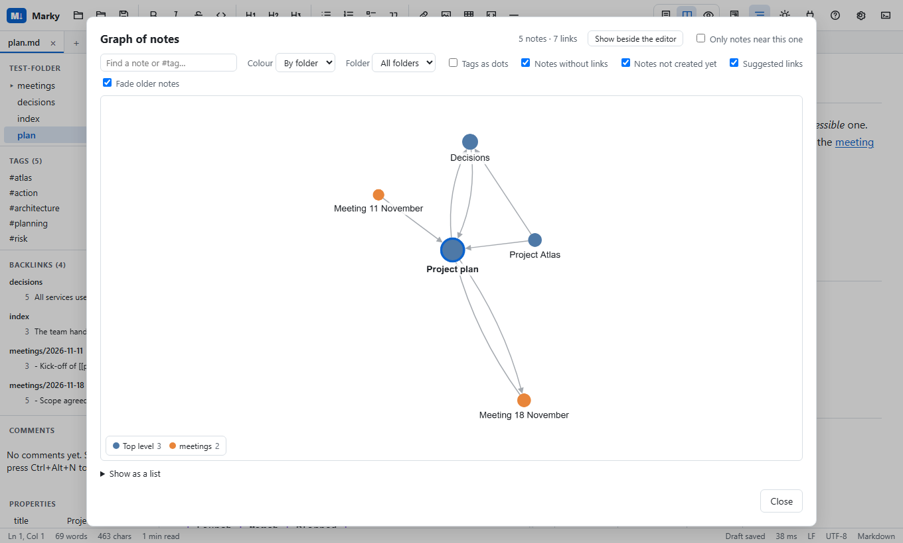
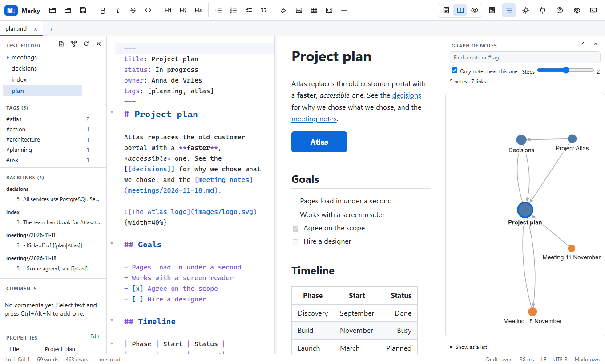

8. Linked notes, tags and the graph
Links between notes
Two ways to link to another note in the folder:
[the plan](projects/plan.md): an ordinary Markdown link, which works everywhere (GitHub, other editors, websites).[[plan]],[[plan#Budget]]or[[plan|our plan]]: a wikilink, by name, to a heading, or with your own text. Typing[[suggests notes.
Click a link in the preview to open the note. A wikilink to a note that doesn't exist yet is shown dimmed; clicking it creates the note.
Backlinks
The Backlinks panel lists the notes that link to the one you're reading, with the sentence around each link. Click one to go there.

Tags
Write #tag in the text (or tags: [a, b] in the properties). The Tags panel lists every tag in the folder with how often it's used; click one to search for it. Rename tag… changes it in every note.
The graph
Show graph of notes (Ctrl+Shift+G, or the graph button in the Files panel) draws your notes as dots and their links as lines. Drag to move around, scroll to zoom, click a note to open it. Notes that nothing links to stand out, so you can find loose ends.

The graph beside the editor
Like in Obsidian, the graph can stay open next to your note: Ctrl+Alt+G (Graph beside the editor on/off, or Show beside the editor in the large graph). The pane shows the note you're in with its neighbours (Steps sets how far: 1–3 links), and follows you: open another note and the graph centres on that one. Click a dot to open its note; the pane stays, so you can walk through your notes from link to link. Search to make notes stand out, ⤢ for the large graph with all its options, × to close. Marky remembers whether it's open.

Architecture documentation
Marky has extra help for documenting software architecture with arc42, decision records (ADRs) and concepts (Settings › Features › Architecture work): templates for each, a check that every arc42 chapter is filled in and every decision has a status, a list of decisions, and C4 diagrams from Structurizr models drawn in the preview. The commands start with Architecture.